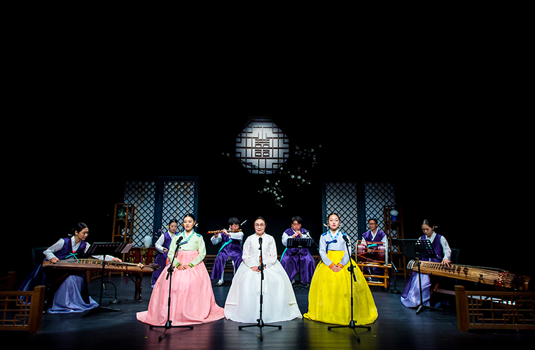

수요상설 <수요공감>
- 일시
- 3·6·9·12월 매주 수요일 19:30
- 장소
- 예지당
- 관람료
- A석 10,000원 B석 8,000원
- 출연진/연출진
- 초청(명인 및 단체) 공모(신진·중견 예술인 및 단체)
- 관람연령
- 취학아동이상
전통예술과 창작활동을 지원하는 열린무대!
전통문화 예술인을 지원하고, 창조와 계승의 전통예술가 정신이 담긴 무대. 선조의 예술혼을 이어가고 자신만의 색을 찾을 무대로 초청과 공모를 통해 선정된 명인, 중견, 신진예술인들의 전통과 창작을 아우르는 폭 넓은 프로그램이다.
3월
8일
네 번째 판소리고법 발표회 ‘강산제 심청가’ / 일통고법보존회 부산지회
범피중류 ~ 심청이 물에 빠지는 대목, 화초타령, 심봉사 황성 올라가는대목, 심봉사 눈뜨는 대목
15일
아흔아홉의 이름 / 황규선무용단
우리나라 곳곳의 못과, 논, 마을을 ‘아흔아홉의 이름’ 에 담아 우리 전통춤을 기반으로 한 무용극으로 표현함
22일
이준의 가야금 素雲(소운)
관악영산회상 ‘상령산’, 가야금 산조, 서도좌창 ‘축원경, 파경’, 장생보연
29일
초청공연 박은하 연․희
설장구, 징춤, 설장구춤, 쇠춤
6월
7일
젊은 소리꾼 박세미의 동초제 심청가 눈 대목
곽씨부인 유언 대목, 인당수 빠지는 대목, 심봉사 황성올라가는 대목, 방아타평, 부녀 상봉 대목~심봉사 눈뜨는 대목
14일
이영섭의 가즌회상
<영산회상>을 중심으로 그 중간에 <도드리>를 삽입하고 끝에 <천년만세>를 덧붙여 연주하는 것으로서 13곡을 연달아 연주하는 대곡
21일
조한민의 ‘내어 달아 맺고 풀다’
전통연희와 전통장단이 가지고 있는 내고 달고 맺고 푸는 기.경.결.해.(起景結解)를 공연의 모티브로 삼아 전통연희, 전통장단이 가지고 있는 많은 매력들을 보여줌
28일
초청공연 영송당(永松堂) 조순자의 노래
세상에서 가장 우아한 노래, 가곡(歌曲)
조순자 명인이 엮어 낸 유네스코 인류무형문화유산 ‘가곡’과 풍류방 음악 공연
조순자 명인이 엮어 낸 유네스코 인류무형문화유산 ‘가곡’과 풍류방 음악 공연
9월
6일
최진 가야금 독주회 ‘최옥삼류 가야금산조 전바탕’
짜임이 좋고 높은 예술성을 가진 최옥삼류 가야금산조로 최옥삼이 김창조에게 사사 받아 함동정월에게 전해진 가야금산조
14일
천개의 바람이 되어 / 홍정윤
부산지역에서 한국무용을 일군 신무용 2세대이자 무용 교육자 故황무봉선생의 춤 맥을 이어가고 있는 선, 후배 예인들과 더불어 큰 화합의 바람이 되어 한국 춤의 불꽃을 더욱 아름답게 피어올리고자 만든 작품
20일
최병길의 장단 시리즈-관객과 함께하는 토크 콘서트
기존의 감상만 하는 공연이 아니라 관객과 함께 소통하고 참여하여 진행되는 공연
27일
초청공연 대극 잇는 혼 <박병천가무악보존회>
산자를 위한 축원 덕담, 헌수음악, 제소춤, 액풀이, 박종기류 대금산조, 박병천류 북춤
12월
6일
현의 꿈 현의 비상 – 청의 연 / 박현주
가야금병창 심청가를 25현과 함께 심청이의 회상,딸을 그리워하는 심봉사, 그리고 아버지를 그리워하는 청이라는 세가지 타이틀로 다른 시각에서 본 심청가를 들려 주고자함
13일
이선경 무용단
영산무(靈山舞), 민煞풀이춤, 현(絃)의 언어, 요고(腰鼓)의 향연
20일
따로, 또 같이 / 김혜미
최옥삼류 가야금산조, 나위사위, 섶섬이 보이는 풍경, 피리와 18현 가야금을 위한 ‘Black Waves’
27일
초청공연 시절인연과 춤, 金眞弘 [김진홍]
대숲의 바람처럼 잔영되어 보이네-
김진홍 팔십 여년의 한 팔과 한 걸음의 디딤
김진홍 팔십 여년의 한 팔과 한 걸음의 디딤
